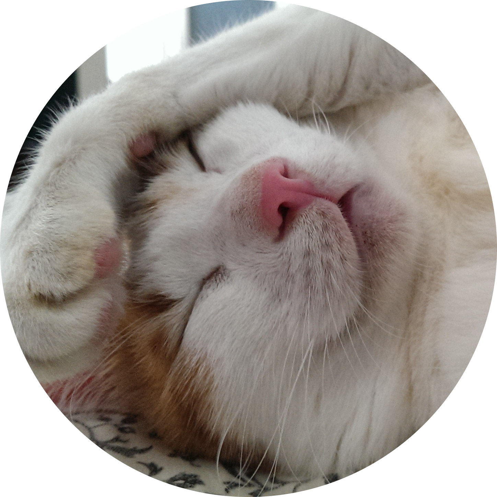

|  |
Brian Lo
Register social work and Founder of this website
My name is Lo Wai Yin. You can call me Brian
As you can see from my resume, I am a refresh grad from the University of Hong Kong with a master degrees in social work. However, I had almost 8 years working in NGO. Mostly in the ICCMW setting. It is mainly servicing person with mental illness. I had been biding different fundings for the project to use of strength-base perspective to enhance the self-esteem of person with mental illness. The funding was from Equal Opportunities Commission and Social Welfare Department, the Arts Development Fund for Persons with Disabilities. I also conduct cases with strength-based model to improve the person with mental illness in self-confidence and self value. Furthermore, I group person with mental illness who has photography interest to be a photography volunteer to help elderly to take family photos in the community. In my placement, I was placed in Halfway house and in District elderly community centre. I practice CBT, recovery model, and holistic health model to work on different cases. I also conducted self-learning and stress release group. In the program, I used phsychoeducation to help enhance the COVID-19 knowledge and self protection in halfway house; also, I used positive psychology as a framework to help enhance elderly’s mental wellness with Laugher Yoga and gratitude practice. Throughout the social work learning and working experience. I am a very friendly person that can easily get along with client and build trust with them. Therefore, I am able to easily identify the needs of client. I am also a team player, in the project that I mentioned before, I had to collaborate with different colleague to conduct a art exhibition at Tsuen Wan Town Hall. I am also willing to learn. I did not only finished the master degree program. I am also learning MBCT in the Oxford mindfulness centre. I hoped that I can equip more to help every client that I will be meeting in the future. |